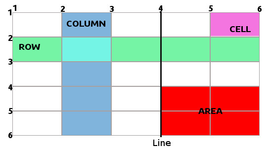

CSS Grid Layout
Algunas consideraciones

- Sistema de rejilla de dos dimensiones: Controlamos los dos ejes
- Manejo de items en cualquiera de las celdas del grid, aunque tambien hay auto-placement.
- Podemos hacer lo mismo de muchas formas, pero todas tendrán distinto comportamiento.
- Es extenso y complejo, pudiendo profundizar muchísimo en el.
- Combina a la perfección con flexbox
Vamos allá!!!

Grid Básico
- Grid tracks( rows & columns )
- Grid lines
- Grid cells
- Grid area( rectangular )
Al declarar display
- display: grid
- display: inline-grid
Los hijos de ese container, pasan a ser grid-items
Al definir tracks
fr La nueva medida fr es sólo aplicable en nuestro css-grid
grid-auto-rows: 1fr; Contenido dinamico
Algunas Utilidades I
repeat() Podemos repetir medidas sin necesidad de ponerlas todas
minmax() Define un mínimo y un máximo al track
Algunas Utilidades II
auto-fill / auto-fit Calculan automaticamente el número de repeticiones*
Combinadas con minmax() hacen el contenido flexible
* No es posible combinar dos auto-fill/fit en el mismo track
* Ambos deben ser usados en minmax con min fijo y max flexible, si son las dos fijas coge max
* Con auto-fill/fit no puedo tener fr ni autos fuera del minmax
* Cuando no tengo suficientes tracks por columna, auto-fit collapsa a 0 los tracks vacios usando todo el espacio, auto-fill los genera pero vacios dejando huecos libres
Jugando con los items
Puedo colocar los items allá donde quiera dentro del grid
*grid-column[-start][-end] Número de línea para colocar el item
*grid-column (shorthand) start/end lineas en las que posiciono el item
*Cuidado con su uso, pues es contrario a la accesibilidad
*Lo mismo con las rows
Expandir items & superposicion
span También podemos expandir items
grid-column Permite superponer items
Líneas, líneas!!!
[nombre-linea] Para layouts complejos podemos ayudarnos nombrando las líneas.
En responsive al nombrar las líneas, en muchos casos nos ahorraremos volver a definir posiciones
Las líneas pueden tener más de un nombre [header-start sidebar-start]
Y mas líneas!!!
Las lineas pueden nombrarse igual.
Este caso puede ser útil adaptar el tamaño de los gaps usándolos como columnas, haciendo layouts irregulares.
Tambien podemos apoyarnos en repeat => grid-template-columns: repeat(4, [col] 1fr);
Un poco sobre áreas
grid-template-areas Permite definir que espacios cubren las distintas áreas.
"." Indica un área vacía.
grid-area Da nombre a un área.
* Las áreas definidas, crean autómaticamente sus correspondientes líneas [header-start header-end]
* Las líneas [header-start header-end] definidas en rows y columnas, también crean la correspondiente área header
Alineación de items
align-self / align-items Columnas o block axis.
justify-self / justify-items Filas o inline axis
Alineación de tracks
align-content Columnas o block axis.
justify-content Filas o inline axis